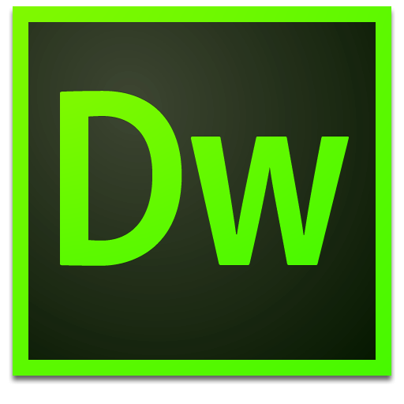

台中前端社群
給還在用DreamWeaver的你
Taichung Frontend Group
場地WIFI: MeetingL / 0423692699
簡報連結: http://frontend.inow.tw/events/1009/
今日流程
- 來賓自我介紹
- DreamWeaver好在哪裡?
- 取代DreamWeaver的工具
- 中場休息
- Emmet簡介
- QnA
- 交流時間
自我介紹時間
- 我的名字是
- 任職的公司與職務
- 從哪個方向來
- 想學的部份
DW好在哪?
取代DW的工具
Notepad++, Adobe Brackets/Edge...etc.
snippets(提示)
取代DW的工具 Chrome與DevTools
顯示結果部份, livereload免去refresh
Demo livereload
- 1. 安裝Chrome的LiveReload Extension
- 2. 安裝Sublime Text的LiveReload Package
- 3. 開啟常用的WebServer
- 4. 啟動Chrome的LiveReload
Chrome的小工具
MeasureIt, ColorZilla, Page Ruler, Pesticide, Measure Dimension
還有那些? Web Store的開發人員工具
輔助執行工具
Grunt.js, Gulp.js, Compass, Fire.app, Codekit
中場休息 15mins
Emmet
Q & A
為何還要用DW?
交流時間

Thank You